Agent Messages: the tab bar
The real macOS title bar and menus (SwarmTitlebar.swift), drawn with sample tabs by
tool/agent_messages_preview.swift. In every scene lamp and desktop have Agent Messages
on, while website and notes have it off. Traffic lights are grey because the render window is never brought to the front, and tooltips
can't be captured.
What changed from your review
- No ⌘1/⌘2/⌘3 on tabs. The shortcuts still work, and holding ⌘ no longer changes the tabs.
- The tab icon is now a chat icon, two speech bubbles for agents talking, instead of ⇄. It's grey when off and blue when on. Blue is the design system's one accent, used for selection and "on", and no status mark uses it. In menus, Show Agent Messages uses a bubble with text lines.
- While agents message each other, the status slot (where the spinner, ✓ and ? sit) shows the chat icon, its two bubbles swapping sides every half second, for 10 seconds after the last message, then goes back to working, done or question.
- At rest, names use the whole tab again. On hover, a name only moves left as far as 💬 and × need.
The animation
Frames rendered from the real title bar, played at the real timing. A message moves, and lamp's status slot shows the chat icon, its bubbles swapping sides every half second. Ten seconds after the last message, lamp goes back to its working spinner. This loops; each new message would start the ten seconds again. With Reduce Motion on, the icon holds still.
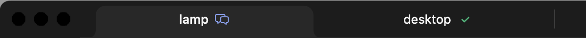
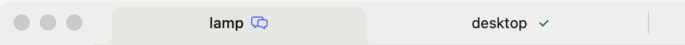
Dark (Graphite)
1 · At rest, quiet
Name and status only.

2 · At rest, lamp's agents are messaging
lamp's status slot shows the chat icon in blue, flipping between the two frames below every half second, as if the agents take turns. After 10 s it goes back to lamp's spinner.
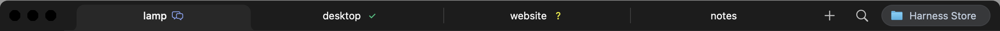
3 · Hover website (off)
Grey 💬 and ×. The status stays. Clicking 💬 turns Agent Messages on.
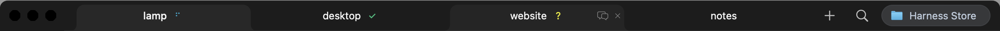
4 · Hover desktop (on, quiet)
💬 in blue. Clicking it turns Agent Messages off.
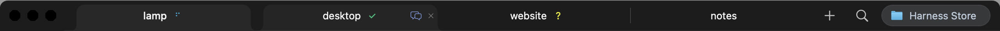
5 · Hover lamp (on, messaging)

6 · Pointer on website's 💬
The grey 💬 brightens under the pointer. Its tooltip reads “Agent messages off · click to turn on”.
7 · Nine tabs, at rest, then hovering desktop
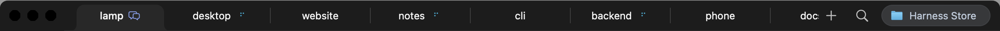
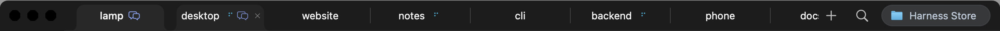
Nine tabs at rest: before Agent Messages, main today, this change
before Agent Messages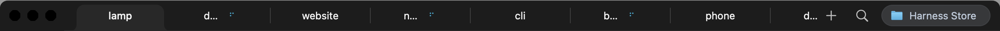
main today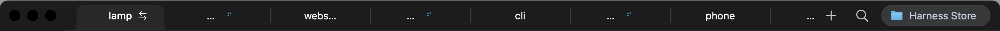
this change8 · Menus: right-click lamp (on), right-click website (off), File
Light (Paper)
1 · At rest, quiet
2 · At rest, lamp's agents are messaging
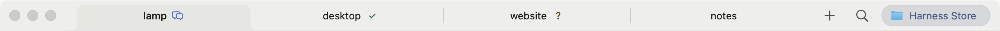
3 · Hover website (off)
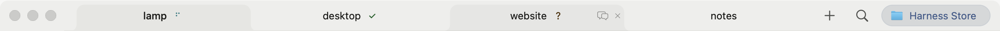
4 · Hover desktop (on, quiet)
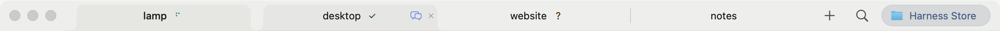
5 · Hover lamp (on, messaging)
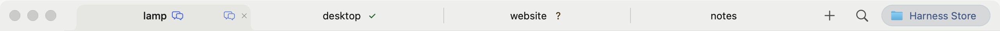
6 · Pointer on website's 💬
7 · Nine tabs, at rest, then hovering desktop
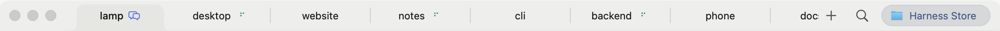
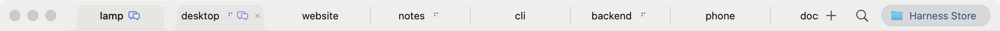
8 · Menus

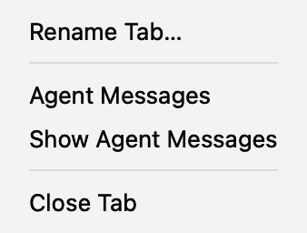
Re-render: HARNESS_AGENT_MESSAGES_PREVIEW_DIR=<dir> bash desktop/tool/check_swarm_titlebar.sh <flutter-sdk> --agent-messages-preview.
The “before” image comes from the same tool run against the title bar at #1159 (3a97ef3ed4). “main today” is #1161.